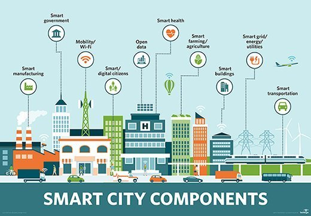

A municipality that uses information technology to increase efficiency and to improve the quality of public life. 
Smart City technology is a rapidly developing area of research around the world. Some cities have had a long history of adopting new technologies to make operations more efficient (like Singapore), and some cities have been reluctant to embrace new technologies. Boston is somewhere in the middle, looking at these new technologies as ways to improve public life, but requiring them to be thoroughly examined and scrutinized before implementation. This website hopes to shed light on Boston’s current and planned initiatives on implementing ‘Smart City’ technologies, as well as to offer suggestions based on implementations from other cities.
{% endblock %}